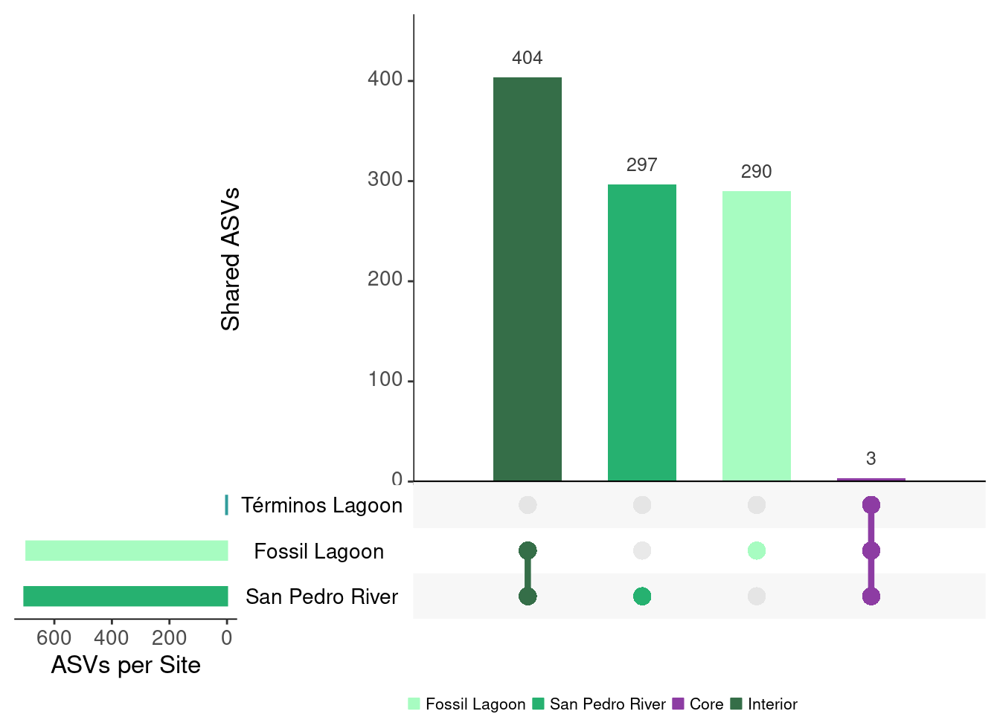
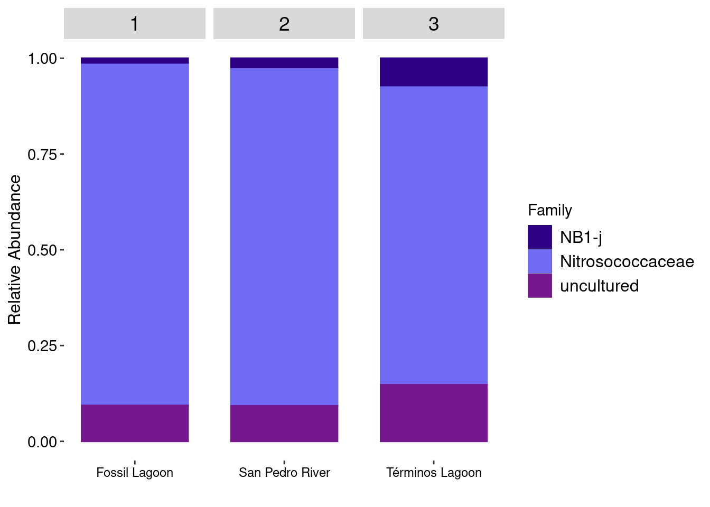
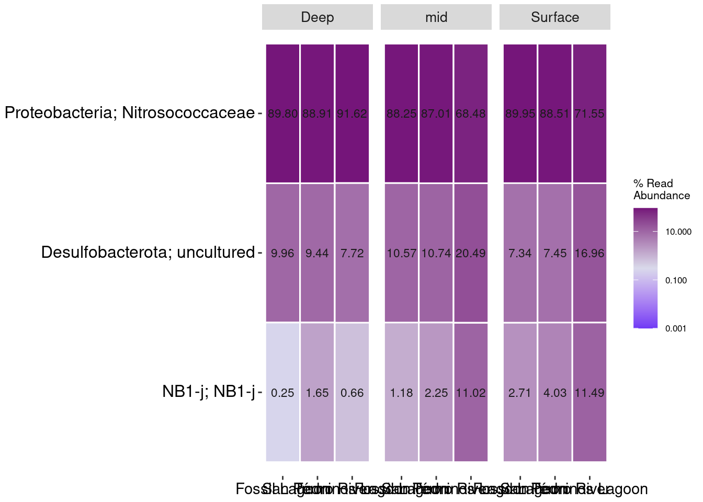

Attaching package: 'dplyr'The following objects are masked from 'package:stats':
filter, lagThe following objects are masked from 'package:base':
intersect, setdiff, setequal, union
Attaching package: 'dplyr'The following objects are masked from 'package:stats':
filter, lagThe following objects are masked from 'package:base':
intersect, setdiff, setequal, union#load data
physeq_qiime3 <- readRDS("rds/Depth_comparison/physeq_qiime3.rds")# Rename mangrove system columna
colnames(sample_data(physeq_qiime3))[colnames(sample_data(physeq_qiime3)) == "Mangrove system"] <- "Mangrove.system"
# Convert Mangrove_system to factor
sample_data(physeq_qiime3)$Mangrove.system <- as.factor(sample_data(physeq_qiime3)$Mangrove.system)# Prevalence threshold
prevalence_threshold <- 0.8
# Storage ASVs core list
core_list <- list()
locations <- levels(sample_data(physeq_qiime3)$Mangrove.system)
# Calculate core
for (loc in locations) {
# Filter samples by mangrove system
physeq_loc <- prune_samples(sample_data(physeq_qiime3)$Mangrove.system == loc, physeq_qiime3)
n_samples_loc <- nsamples(physeq_loc)
# Extract OTU table
otu <- as(otu_table(physeq_loc), "matrix")
# Calc prevalence
prevalence <- rowSums(otu > 0) / n_samples_loc
# Identify ASVs with prevalence >= umbral
core_taxa <- names(prevalence)[prevalence >= prevalence_threshold]
# Guardar en la lista
core_list[[loc]] <- core_taxa
}
# Show ASVs core by mangrove system
print(lapply(core_list, length))$`Fossil Lagoon`
[1] 697
$`San Pedro River`
[1] 704
$`Términos Lagoon`
[1] 3# checkpoint,if empty try threshold = 1
if (all(sapply(core_list, length) == 0)) {
cat("Try prevalence = 1...\n")
prevalence_threshold <- 1.0
core_list <- list()
for (loc in locations) {
physeq_loc <- prune_samples(sample_data(physeq_qiime3)$Mangrove.system == loc, physeq_qiime3)
n_samples_loc <- nsamples(physeq_loc)
otu <- as(otu_table(physeq_loc), "matrix")
prevalence <- rowSums(otu > 0) / n_samples_loc
core_taxa <- names(prevalence)[prevalence >= prevalence_threshold]
core_list[[loc]] <- core_taxa
}
print(lapply(core_list, length))
}# Unique core ASV list
all_core_asvs <- unique(unlist(core_list))
# Create matrix presence/absence
core_matrix <- matrix(0, nrow = length(all_core_asvs), ncol = length(locations),
dimnames = list(all_core_asvs, locations))
# fill matrix:
for (loc in locations) {
core_matrix[core_list[[loc]], loc] <- 1
}
# Convert to data frame to UpSetR
core_df <- as.data.frame(core_matrix)
# Create intersection list
queries_list <- list()# Fossil Lagoon
queries_list <- append(queries_list, list(
list(query = intersects, params = list("Fossil Lagoon"), color = "#A7FCC1",
active = TRUE, query.name = "Fossil Lagoon")
))
# San Pedro River
queries_list <- append(queries_list, list(
list(query = intersects, params = list("San Pedro River"), color = "#26B170",
active = TRUE, query.name = "San Pedro River")
))
# Terminos Lagoon
#queries_list <- append(queries_list, list(
# list(query = intersects, params = list("Términos Lagoon"), color = "#329D9C",
# active = TRUE, query.name = "Términos Lagoon")
# Core
queries_list <- append(queries_list, list(
list(query = intersects, params = list("Fossil Lagoon",
"San Pedro River",
"Términos Lagoon"),
color = "#8D3CA3", active = TRUE, query.name = "Core")))
# Interior
queries_list <- append(queries_list, list(
list(query = intersects, params = list("Fossil Lagoon", "San Pedro River"),
color = "#356E48", active = TRUE, query.name = "Interior")
))
## Note: due to the fact that there were no unique asvs for coastal, it was not integrated in this selection.#library(UpSetR)
upset_plot <- upset(core_df,
sets = colnames(core_df),
order.by = "freq",
mainbar.y.label = "Shared ASVs",
sets.x.label = "ASVs per Site",
text.scale = 1.5,
point.size = 4,
line.size = 1.5,
query.legend = "bottom",
sets.bar.color =
c("#26B170","#A7FCC1","#329D9C"),
queries = queries_list)
# show
print(upset_plot)
### get unique ASVs per mangrove system
unique_asvs <- list()
for (loc in colnames(core_df)) {
unique_asvs[[loc]] <- rownames(core_df)[rowSums(core_df == 1) == 1 & core_df[[loc]] == 1]
cat(loc, ": Unique ASVs:", length(unique_asvs[[loc]]), "\n")
print(head(unique_asvs[[loc]], 5)) # Show first 5
}Fossil Lagoon : Unique ASVs: 290
[1] "AB530174.1.1517" "FN398053.1.1489" "GU583984.1.1476" "KX768747.1.1475"
[5] "EU385876.1.1464"
San Pedro River : Unique ASVs: 297
[1] "JN514502.1.1443" "HQ691951.1.1342" "GU056110.1.1453" "AF424530.1.990"
[5] "EU592483.1.1535"
Términos Lagoon : Unique ASVs: 0
character(0)# Verify taxonomy
if (!is.null(tax_table(physeq_qiime3))) {
tax_table_df <- as.data.frame(tax_table(physeq_qiime3))
# Get taxonomy function
get_taxonomy <- function(asv_list) {
if (length(asv_list) > 0) {
taxonomy <- tax_table_df[asv_list, , drop = FALSE]
return(taxonomy)
} else {
return(NULL)
}
}
# Get taxonomy
taxonomy_unique <- lapply(unique_asvs, get_taxonomy)
# show first 5 unique ASVs
for (loc in names(taxonomy_unique)) {
cat("\nFirst unique ASVs taxonomy", loc, ":\n")
if (!is.null(taxonomy_unique[[loc]])) {
print(head(taxonomy_unique[[loc]], 5))
} else {
cat("There are no unique ASV to", loc, "\n")
}
}
} else {
cat("Please import taxonomy.\n")
}
First unique ASVs taxonomy Fossil Lagoon :
Kingdom Phylum
AB530174.1.1517 d__Bacteria Zixibacteria
FN398053.1.1489 d__Bacteria Proteobacteria
GU583984.1.1476 d__Bacteria SAR324_clade(Marine_group_B)
KX768747.1.1475 d__Bacteria Proteobacteria
EU385876.1.1464 d__Bacteria Proteobacteria
Class Order
AB530174.1.1517 Zixibacteria Zixibacteria
FN398053.1.1489 Gammaproteobacteria Cellvibrionales
GU583984.1.1476 SAR324_clade(Marine_group_B) SAR324_clade(Marine_group_B)
KX768747.1.1475 Alphaproteobacteria Sphingomonadales
EU385876.1.1464 Gammaproteobacteria UBA10353_marine_group
Family Genus
AB530174.1.1517 Zixibacteria Zixibacteria
FN398053.1.1489 Halieaceae <NA>
GU583984.1.1476 SAR324_clade(Marine_group_B) SAR324_clade(Marine_group_B)
KX768747.1.1475 Sphingomonadaceae <NA>
EU385876.1.1464 UBA10353_marine_group UBA10353_marine_group
Species
AB530174.1.1517 uncultured_bacterium
FN398053.1.1489 <NA>
GU583984.1.1476 <NA>
KX768747.1.1475 <NA>
EU385876.1.1464 uncultured_bacterium
First unique ASVs taxonomy San Pedro River :
Kingdom Phylum Class
JN514502.1.1443 d__Bacteria Chloroflexi Dehalococcoidia
HQ691951.1.1342 d__Bacteria Chloroflexi Dehalococcoidia
GU056110.1.1453 d__Bacteria Chloroflexi Anaerolineae
AF424530.1.990 d__Archaea Thermoplasmatota Thermoplasmata
EU592483.1.1535 d__Bacteria Desulfobacterota Desulfobacteria
Order
JN514502.1.1443 FW22
HQ691951.1.1342 FW22
GU056110.1.1453 Anaerolineales
AF424530.1.990 Marine_Benthic_Group_D_and_DHVEG-1
EU592483.1.1535 Desulfatiglandales
Family
JN514502.1.1443 FW22
HQ691951.1.1342 FW22
GU056110.1.1453 Anaerolineaceae
AF424530.1.990 Marine_Benthic_Group_D_and_DHVEG-1
EU592483.1.1535 Desulfatiglandaceae
Genus Species
JN514502.1.1443 FW22 uncultured_organism
HQ691951.1.1342 FW22 uncultured_bacterium
GU056110.1.1453 uncultured <NA>
AF424530.1.990 Marine_Benthic_Group_D_and_DHVEG-1 <NA>
EU592483.1.1535 Desulfatiglans uncultured_bacterium
First unique ASVs taxonomy Términos Lagoon :
There are no unique ASV to Términos Lagoon # Confirm the total number of unique ASVs
lapply(taxonomy_unique, function(x) if (!is.null(x)) nrow(x) else 0)$`Fossil Lagoon`
[1] 290
$`San Pedro River`
[1] 297
$`Términos Lagoon`
[1] 0# Create a list to store unique asv to Phylum level
phylum_unique <- list()
# Iterate on each Mangrove system
for (loc in names(taxonomy_unique)) {
if (!is.null(taxonomy_unique[[loc]])) {
# Extract taxonomy phylum
tax_df <- taxonomy_unique[[loc]]
if ("Phylum" %in% colnames(tax_df)) {
phylum <- tax_df$Phylum
phylum <- phylum[!is.na(phylum)] # Exclude NA
phylum_unique[[loc]] <- unique(phylum)
} else {
cat("Phylum is not available to", loc, "\n")
phylum_unique[[loc]] <- character(0)
}
} else {
phylum_unique[[loc]] <- character(0)
}
}
# Identify exclusive phylum for Mangrove system
all_phylums <- unique(unlist(phylum_unique))
phylum_exclusive <- list()
for (loc in names(phylum_unique)) {
other_locations <- setdiff(names(phylum_unique), loc)
other_phylum <- unique(unlist(phylum_unique[other_locations]))
exclusive_phylum <- setdiff(phylum_unique[[loc]], other_phylum)
phylum_exclusive[[loc]] <- exclusive_phylum
cat("Exclusive phylum in", loc, ":", length(exclusive_phylum), "\n")
if (length(exclusive_phylum) > 0) {
print(exclusive_phylum)
} else {
cat("There are not exclusive phylum.\n")
}
}Exclusive phylum in Fossil Lagoon : 12
[1] "Bdellovibrionota" "RCP2-54" "PAUC34f"
[4] "FCPU426" "Campilobacterota" "WS2"
[7] "Hydrogenedentes" "Dependentiae" "Nitrospinota"
[10] "Entotheonellaeota" "Acetothermia" "Euryarchaeota"
Exclusive phylum in San Pedro River : 7
[1] "GN01" "Dadabacteria"
[3] "CK-2C2-2" "Caldatribacteriota"
[5] "Marinimicrobia_(SAR406_clade)" "Fibrobacterota"
[7] "Elusimicrobiota"
Exclusive phylum in Términos Lagoon : 0
There are not exclusive phylum.# Create a list to store unique asv to specific taxonomy level
families_unique <- list()
# Iterate on each Mangrove system
for (loc in names(taxonomy_unique)) {
if (!is.null(taxonomy_unique[[loc]])) {
# Extract taxonomy families
tax_df <- taxonomy_unique[[loc]]
if ("Family" %in% colnames(tax_df)) {
families <- tax_df$Family
families <- families[!is.na(families)] # Exclude NA
families_unique[[loc]] <- unique(families)
} else {
cat("Family is not available to", loc, "\n")
families_unique[[loc]] <- character(0)
}
} else {
families_unique[[loc]] <- character(0)
}
}
# Identify exclusive family for Mangrove system
all_families <- unique(unlist(families_unique))
families_exclusive <- list()
for (loc in names(families_unique)) {
other_locations <- setdiff(names(families_unique), loc)
other_families <- unique(unlist(families_unique[other_locations]))
exclusive_families <- setdiff(families_unique[[loc]], other_families)
families_exclusive[[loc]] <- exclusive_families
cat("Exclusive family in", loc, ":", length(exclusive_families), "\n")
if (length(exclusive_families) > 0) {
print(exclusive_families)
} else {
cat("There are not exclusive family.\n")
}
}Exclusive family in Fossil Lagoon : 54
[1] "UBA10353_marine_group" "Bdellovibrionaceae"
[3] "OPB41" "Ignavibacteriaceae"
[5] "RCP2-54" "Pla1_lineage"
[7] "GIF3" "Rhodomicrobiaceae"
[9] "Desulfomonilaceae" "PAUC34f"
[11] "Nitrincolaceae" "Bacteroidetes_vadinHA17"
[13] "PAUC26f" "Rhodospirillaceae"
[15] "SB-5" "GIF9"
[17] "FCPU426" "Sandaracinaceae"
[19] "B2M28" "Sulfurimonadaceae"
[21] "VHS-B3-70" "vadinBA26"
[23] "WS2" "Aenigmarchaeales"
[25] "Hydrogenedensaceae" "Caulobacteraceae"
[27] "KD4-96" "Micavibrionales"
[29] "Subgroup_18" "Prolixibacteraceae"
[31] "Dissulfuribacteraceae" "Run-SP154"
[33] "Subgroup_21" "SG8-5"
[35] "Blastocatellaceae" "Methylohalobiaceae"
[37] "Vermiphilaceae" "Unknown_Family"
[39] "Babeliales" "Mycobacteriaceae"
[41] "Kineosporiaceae" "Geothermarchaeaceae"
[43] "P9X2b3D02" "Entotheonellaceae"
[45] "Arenicellaceae" "Acetothermiia"
[47] "mle1-8" "Flavobacteriaceae"
[49] "4572-13" "Rhodobacteraceae"
[51] "Myxococcaceae" "Euzebyaceae"
[53] "PS1_clade" "Puniceicoccaceae"
Exclusive family in San Pedro River : 44
[1] "FW22" "RBG-13-46-9"
[3] "GN01" "Dadabacteriales"
[5] "RBG-16-55-12" "Subgroup_9"
[7] "CK-2C2-2" "Gemmatimonadaceae"
[9] "Nitrosomonadaceae" "Parvularculaceae"
[11] "Acidiferrobacteraceae" "MSBL5"
[13] "MD2902-B12" "Napoli-4B-65"
[15] "JTB23" "Defluviicoccaceae"
[17] "Deep_Sea_Euryarchaeotic_Group(DSEG)" "Subgroup_13"
[19] "ER-E4-17" "Subgroup_17"
[21] "37-13" "CCM11a"
[23] "Omnitrophaceae" "Cellvibrionaceae"
[25] "Cryomorphaceae" "Desulfococcaceae"
[27] "bacteriap25" "Rhizobiales_Incertae_Sedis"
[29] "LD1-PA32" "661239"
[31] "Sh765B-AG-111" "SPG12-461-471-B8"
[33] "JS1" "Geothermobacteraceae"
[35] "Vicinamibacteraceae" "Marinimicrobia_(SAR406_clade)"
[37] "SAR202_clade" "TG3"
[39] "AKYG1722" "BD7-11"
[41] "TRA3-20" "Pedosphaeraceae"
[43] "Lineage_IIb" "Thiotrichaceae"
Exclusive family in Términos Lagoon : 0
There are not exclusive family.# Combine taxonomy in data.frame
taxonomy_unique_df <- do.call(rbind, lapply(names(taxonomy_unique), function(loc) {
if (!is.null(taxonomy_unique[[loc]])) {
df <- taxonomy_unique[[loc]]
df$Location <- loc
df$ASV <- rownames(df)# add name asv column
return(df)
} else {
return(NULL)
}
}))
# Move columns
taxonomy_unique_df <- taxonomy_unique_df[, c("ASV", "Location", setdiff(names(taxonomy_unique_df), c("ASV", "Location")))]
# show first rows of data.frame to verify
print(head(taxonomy_unique_df)) ASV Location Kingdom
AB530174.1.1517 AB530174.1.1517 Fossil Lagoon d__Bacteria
FN398053.1.1489 FN398053.1.1489 Fossil Lagoon d__Bacteria
GU583984.1.1476 GU583984.1.1476 Fossil Lagoon d__Bacteria
KX768747.1.1475 KX768747.1.1475 Fossil Lagoon d__Bacteria
EU385876.1.1464 EU385876.1.1464 Fossil Lagoon d__Bacteria
JQ989640.1.1399 JQ989640.1.1399 Fossil Lagoon d__Archaea
Phylum Class
AB530174.1.1517 Zixibacteria Zixibacteria
FN398053.1.1489 Proteobacteria Gammaproteobacteria
GU583984.1.1476 SAR324_clade(Marine_group_B) SAR324_clade(Marine_group_B)
KX768747.1.1475 Proteobacteria Alphaproteobacteria
EU385876.1.1464 Proteobacteria Gammaproteobacteria
JQ989640.1.1399 Thermoplasmatota Thermoplasmata
Order
AB530174.1.1517 Zixibacteria
FN398053.1.1489 Cellvibrionales
GU583984.1.1476 SAR324_clade(Marine_group_B)
KX768747.1.1475 Sphingomonadales
EU385876.1.1464 UBA10353_marine_group
JQ989640.1.1399 Marine_Benthic_Group_D_and_DHVEG-1
Family
AB530174.1.1517 Zixibacteria
FN398053.1.1489 Halieaceae
GU583984.1.1476 SAR324_clade(Marine_group_B)
KX768747.1.1475 Sphingomonadaceae
EU385876.1.1464 UBA10353_marine_group
JQ989640.1.1399 Marine_Benthic_Group_D_and_DHVEG-1
Genus Species
AB530174.1.1517 Zixibacteria uncultured_bacterium
FN398053.1.1489 <NA> <NA>
GU583984.1.1476 SAR324_clade(Marine_group_B) <NA>
KX768747.1.1475 <NA> <NA>
EU385876.1.1464 UBA10353_marine_group uncultured_bacterium
JQ989640.1.1399 Marine_Benthic_Group_D_and_DHVEG-1 uncultured_archaeon# save data.frame
write.csv(taxonomy_unique_df, file = "Tables/Depth_comparison/unique_asvs_taxonomy.csv", row.names = FALSE)[1] "KX504848.1.1523" "EU652571.1.1503" "KX097089.1.1528"shared_taxonomy <- get_taxonomy(shared_asvs)
print(shared_taxonomy) Kingdom Phylum Class
KX504848.1.1523 d__Bacteria NB1-j NB1-j
EU652571.1.1503 d__Bacteria Proteobacteria Gammaproteobacteria
KX097089.1.1528 d__Bacteria Desulfobacterota Syntrophobacteria
Order Family Genus
KX504848.1.1523 NB1-j NB1-j NB1-j
EU652571.1.1503 Nitrosococcales Nitrosococcaceae AqS1
KX097089.1.1528 Syntrophobacterales uncultured uncultured
Species
KX504848.1.1523 uncultured_delta
EU652571.1.1503 uncultured_bacterium
KX097089.1.1528 <NA># Filter
physeq_shared <- prune_taxa(shared_asvs, physeq_qiime3)
# rel abundance
physeq_rel <- transform_sample_counts(physeq_shared, function(x){x / sum(x)})# Aggregate data by Mangrove_system
physeq_agg <- merge_samples(physeq_rel, "Mangrove.system")Warning in asMethod(object): NAs introduced by coercion
Warning in asMethod(object): NAs introduced by coercion
Warning in asMethod(object): NAs introduced by coercion
Warning in asMethod(object): NAs introduced by coercion
Warning in asMethod(object): NAs introduced by coercion
Warning in asMethod(object): NAs introduced by coercion
Warning in asMethod(object): NAs introduced by coercion
Warning in asMethod(object): NAs introduced by coercion
Warning in asMethod(object): NAs introduced by coercion
Warning in asMethod(object): NAs introduced by coercion# Convert to relative abundance
physeq_agg_rel <- transform_sample_counts(physeq_agg, function(x) x / sum(x))
# Map Mangrove_type back as a simple vector
sample_data(physeq_agg_rel)$Depths <- unlist(sapply(sample_names(physeq_agg_rel), function(sys) {
unique(sample_data(physeq_rel)[sample_data(physeq_rel)$Mangrove.system == sys, "Depths"])[1]
}))# Create the bar plot with facet by Mangrove.system
barplot_core <- phyloseq::plot_bar(physeq_agg_rel, fill = "Family") +
geom_bar(aes(color = Family, fill = Family), stat = "identity", position = "stack") +
labs(x = "", y = "Relative Abundance", element_text(size = 12)) +
facet_wrap(~ Mangrove.system, scales = "free_x", nrow = 1) +
scale_fill_manual(values = c("#2B0082", "#706AF5", "#77178F", "#bfaDDC", "#724BB1", "#DADAEB")) +
scale_color_manual(values = c("#2B0082", "#706AF5", "#77178F", "#bfaDDC", "#724BB1", "#DADAEB")) + # #716EC1
theme(axis.text = element_text(colour = "black", size = 12),
axis.title = element_text(colour = "black", size = 12),
legend.text = element_text(size = 12),
legend.title = element_text(size = 11),
axis.text.x = element_text(size = 9, angle = 0,
hjust = 0.5, color = "black"),
axis.text.y = element_text(size = 11, color = "black"),
strip.text = element_text(size = 14,
color = "black"), #face = "bold"
panel.background = element_blank())
barplot_core
# create and extract otu table
otu_table_ampvis <- data.frame(OTU = rownames(phyloseq::otu_table(physeq_shared)@.Data),
phyloseq::otu_table(physeq_shared)@.Data,
phyloseq::tax_table(physeq_shared)@.Data,
check.names = FALSE)
# Metadata
meta_data_ampvis <- data.frame(phyloseq::sample_data(physeq_shared),
check.names = FALSE)
# change index by SampleID
#meta_data_ampvis <- meta_data_ampvis %>% rownames_to_column(var = "SampleID")
# ampvis object
av2 <- amp_load(otu_table_ampvis, meta_data_ampvis)ampv_heatmap_abundances_phylum_core <- amp_heatmap(av2,
group_by = "Mangrove.system",
facet_by = "Depths",
plot_values = TRUE,
tax_show = 23,
showRemainingTaxa = TRUE,
tax_aggregate = c("Phylum","Family"),
plot_colorscale = "log10",
plot_values_size = 3,
min_abundance = 0.001,
round = 2,
color_vector = c("#703AF5","#DADAEB" ,"#75157a")) + #"#DADAEB"
theme(axis.text.x = element_text(angle = 0, size=11,
vjust = 1, hjust = 0.5),
axis.text.y = element_text(size=12),
legend.position="right")Warning: There are only 3 taxa, showing allampv_heatmap_abundances_phylum_core
png
2 ggsave("Figures/Depth_comparison/rel_abun_coreheatmap.pdf",
ampv_heatmap_abundances_phylum_core, bg='transparent',
width = 6, height = 4)otu_rel_df <- psmelt(physeq_agg_rel)
otu_rel_df_agg <- aggregate(Abundance ~ Sample + Family, data = otu_rel_df, sum)
print(otu_rel_df_agg) Sample Family Abundance
1 Fossil Lagoon NB1-j 0.01217778
2 San Pedro River NB1-j 0.02395375
3 Términos Lagoon NB1-j 0.07146314
4 Fossil Lagoon Nitrosococcaceae 0.89399371
5 San Pedro River Nitrosococcaceae 0.88336550
6 Términos Lagoon Nitrosococcaceae 0.78087311
7 Fossil Lagoon uncultured 0.09382851
8 San Pedro River uncultured 0.09268075
9 Términos Lagoon uncultured 0.14766375saveRDS(upset_plot, "rds/Depth_comparison/upset_surface_plot.rds")